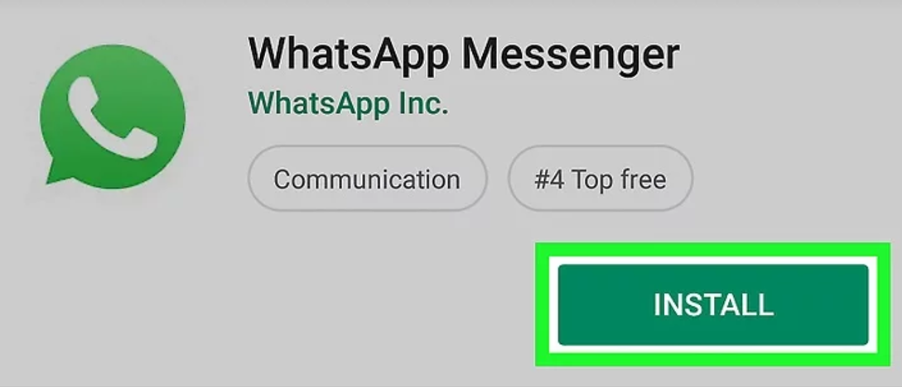

1
Introduction
Whatsapp is a social media app used for communication. It is for free and easily accessible on any android
device or smartphone. It allows users to send text messages and voice messages, make voice and video
calls, and share images, documents, user locations, and other media. It was release on the 3rd of May
2019. It is owned by Facebook, Brian Acton and Jan Koum are the original authors. WhatsApp with use of
the internet, it can send messages, images, audio or video. It allows you to create group chat where you
can chat all your friends at once. It is popular with teenagers because of features like group chatting, voice
messages and location sharing.
How to Register
In order to get whatsapp on your device you need go to the App Store or Play Store and search for it in the search bar. Then you click on the app icon and on the right-hand side there should be a little cloud if it's iPhone or a bar saving "download". You click on that and the app will be installed. How to register: Once you download the app the app will guide you through registration itself. You will be asked to confirm your country code and enter your phone number. After that you will have to verify your phone number. You will receive a message with a code which you then put into the app to clarify your phone number. Then you will be asked to add your name and a profile photo which is optional.

How to Use
Open what’s app on your mobile device and you will see
the main chat page.
This is where you keep track of all messages, calls and
status changes. Along the top row you have the search tab
so you can look for recent or not so recent messages.
Beside the search tab is the settings with three dots. This
is used to open a new group chat, all your favourite or
(starred) messages and out to change your account
settings along with themes, wallpaper and how you receive
notifications.
On the bottom right corner is the message tab where you
select the contact you wish to write to and begin
messaging, it is that easy.
Once you click the green message icon on the bottom
right and choose the contact you wish to use, you are
taken to this screen where you type the message you
want to write and hit enter. If this is too slow for you
or you prefer to talk you can use the record setting on
the bottom right icon instead. Holding this button and
speaking will record anything you say and once
released it will send the voice message.
In the top right corner you have 3 icons, these are
video call, phone call, and contact settings for this
specific contact which you will see below.
If you press the three dot settings icon on the top right
corner while in any specific chat with a contact you are
taken to a menu. This is where you can view the
contacts details, send them images or documents, turn
off the notifications for that person, change the
wallpaper for that chat to give it a more personalised
look. If you want to report
a contact to what’s app
services or even block the
contact from messaging
you again, Just press the
three dots on the top right
hand side while in chat
with the specific contact
you wish to report/block
then press the “more” tab.
Adding documents allows you to send photos, files,
maps and even other contact information to a
chosen contact. To do this just open a chat with a
contact and in the bottom right there is a paperclip
icon that you press to show more options. Just tap
which ever icon you wish to send and it will send
whatever you wish the contact to see.
If you want to add a group with as many contacts as you
want, simply tap the settings icon (three dots on the top
right hand side) then tap the first icon which says “New
group”. Once you do this you will be taken into your
contact list where you select all the people you want in
your group and select the
green arrow.
Once you do this you can
type the name of the group
and also an Icon to represent
that group. You can add
emoticons via the smiling face
emoji beside the subject.
Once you are done, select the
green icon with the tick
and you’re all set up for
the group chat.